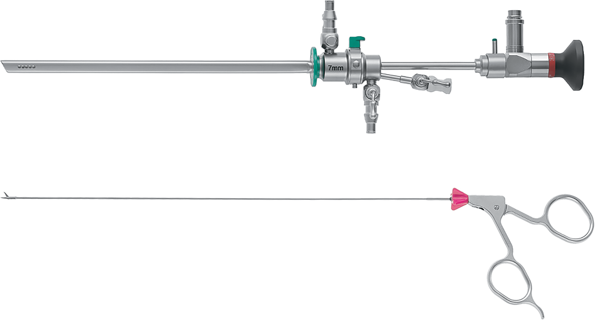
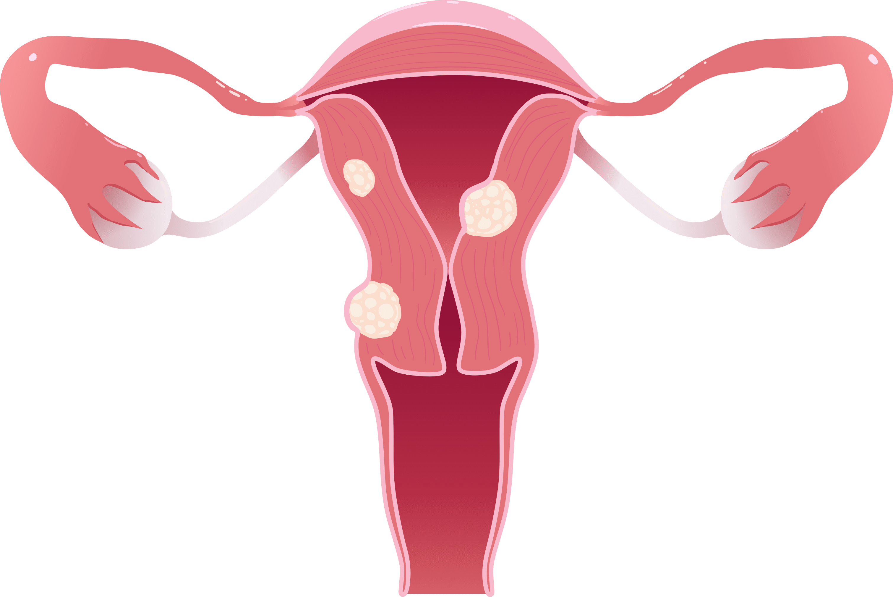
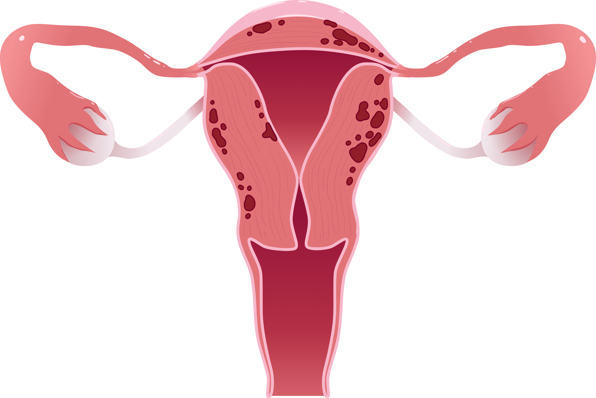

나를 위한 자궁경 클리닉
비수술로
검사와 진료가 동시에
가능한 자궁경
자궁용종(자궁폴립)/자궁근종(점막 하 근종)은 증상이 없어
모르고 방치되거나, 검진 중 발견되는 경우가 많습니다.
출혈, 생리량 과다, 냄새, 분비물, 빈뇨, 변비 증상으로
이어질 수 있기에 초기 진단, 진료가 필요합니다.
- 수술시간 20분 내외
- 회복기간 2~3일
- 입원여부 없음
- 마취방법 수면+국소마취
자궁경

자궁경부로 가느다란 내시경을 삽입해 자궁내막 상태와
병변 확인이 가능하며,
비수술적 치료법으로 자궁내막의 손상을 최소화
하여
안전하게 검사와 동시에 치료가 가능합니다.
자궁강 속의 이상을 확인하는 내시경으로 위내시경과
비슷한 원리이며, 자궁내시경이라고도 불립니다.
직경 3-5mm 내시경을 질을 통해 삽입해 내시경 끝에
달린 카메라로 병변의 위치, 종류, 크기를 파악하고,
전용 기구로 조직 검사가 가능해
자궁내막암 여부를 구분할 수 있습니다.
자궁경 검사 및
치료(자궁경수술) 절차
-
1 사전검사증상에 대한 문진 및 진료
-
2 내시경 시술a. 국소 또는 수면마취
b. 자궁 내강 삽입
c. 자궁내막 상태 관찰
(필요한 경우 조직 채취 또는 병변 제거)
-
3 회복실에서 안정 후 귀가
대표적 적응증
- 자궁내막 용종
- 점막 하 자궁근종
- 자궁 내 유착
- 자궁의 기형
- 자궁내막증식증
나를위한 자궁경 클리닉
- 당일 퇴원
- 시술 직후 일상생활 가능
- 통증 최소화
- 자궁내막 보존
- 시술 후 유착, 재발 위험 거의 없음
- 흉터 없음
자궁경 검사 대상자
자가 체크 리스트
-
생리 과다 또는 불규칙 출혈이 있는 경우
(비정상 자궁출혈) -
초음파에서 자궁내막 폴립,
근종 등이 의심되는 경우 -
반복되는 유산이나 난임이 있는 경우
-
자궁 기형 의심되는 경우
-
자궁내 유착(Asherman 증후군)
의심되는 경우

자궁 내 평활근 이상 증식으로 인해 발생하는 악성종양
자궁내막 근육층 구분이 뚜렷하지 못함
- 생리과다, 생리통
- 빈혈, 통증, 빈뇨
- 착상장애 난임

자궁 근육층 사이 자궁내막 조직이 증식하는 질환
자궁을 비대하게 만들며 극심한 통증, 출혈 유발
- 생리과다, 생리통
- 압박통, 빈뇨, 배변장애
- 착상장애 난임
자궁경 검사(수술) 후
주의사항
-
시술 후 2~3일간
질 출혈이 있을 수 있습니다.
성관계를 삼가해주세요. -
경우에 따라
호르몬 치료가
필요할 수 있습니다. -
열이 나거나 통증이
심할 경우
병원 문의 해주세요.

프라이빗한 휴식 과 회복
나를위한산부인과에서는 치료를 받는
환자분들이
긴장을 완화하고 편안한
마음으로 쉬실 수 있도록
고급스럽고
편안한 분위기의 1인 회복실을 제공합니다.